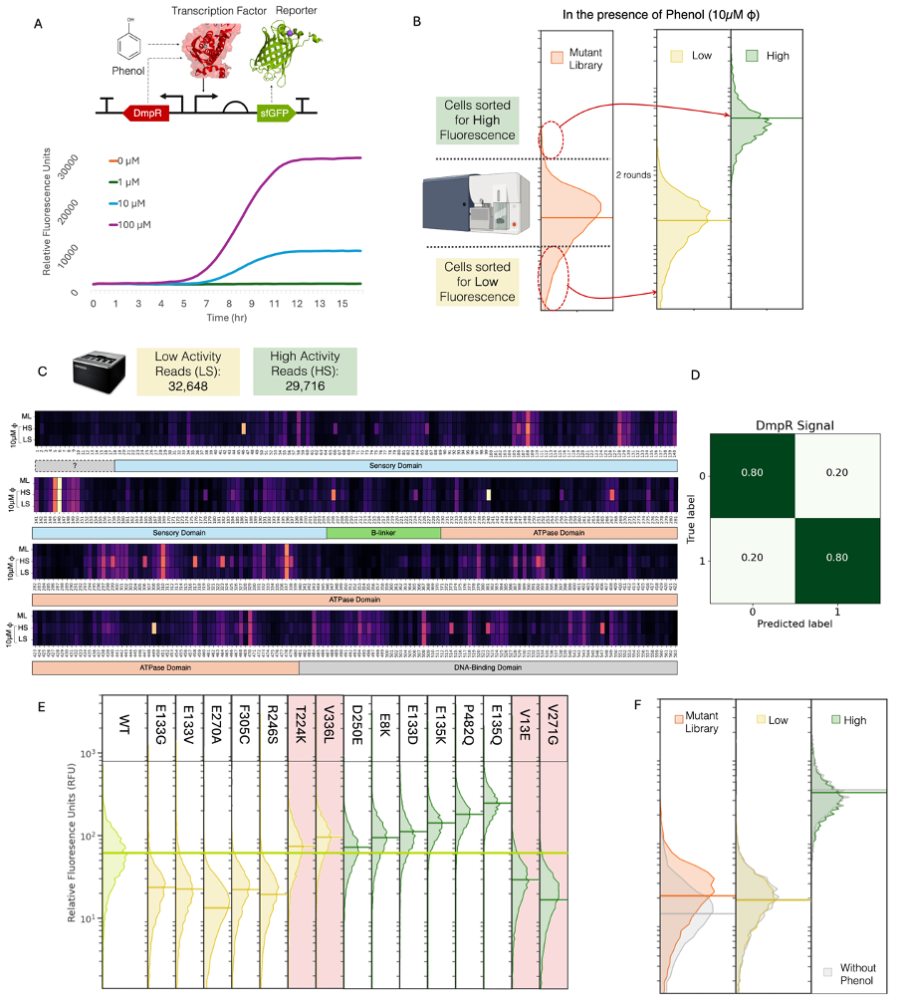
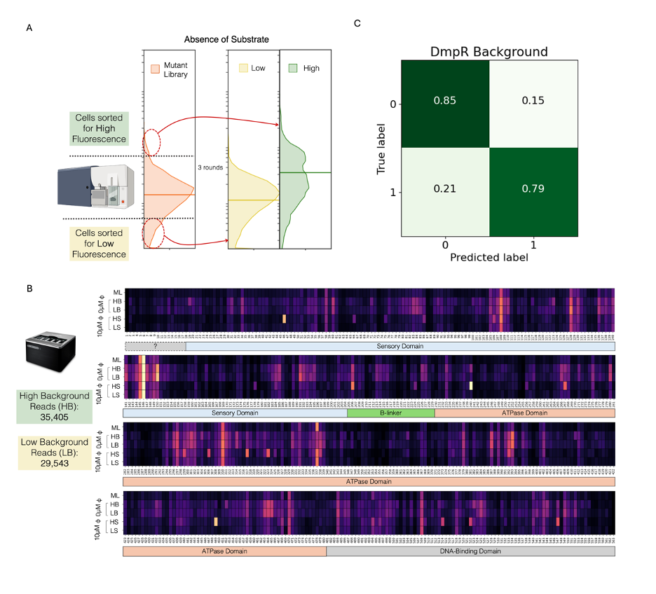
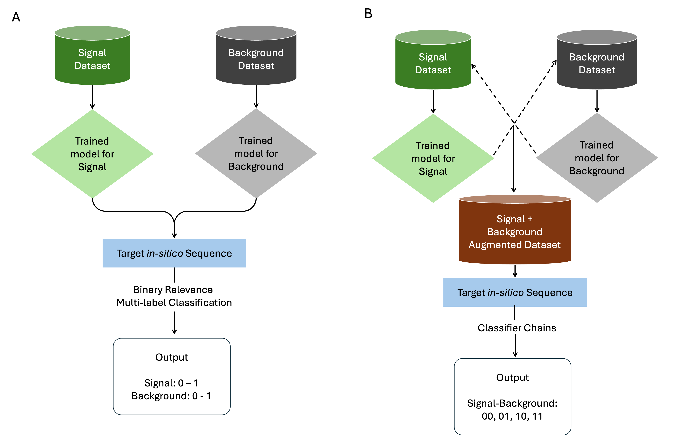

3 Data Collection for AI-based Protein Engineering
3.1 Introduction
Problems with Protein Engineering
AI solutions
Problems with AI based Engineering
Protein engineering involves the continuous collection and analysis of phenotypic and genotypic data to identify advantageous protein variants. Current methods involve either a bottom-up data-driven approach of rational protein design or a top-down high-throughput screening approach of directed evolution to obtain and enhance a specific protein’s activity. Rational engineering requires a comprehensive understanding of the protein’s structural data, mechanism, and ligand interactions, which is often non-transferable to other types of proteins. Directed evolution, on the other hand, focuses on identifying improved candidates through a phenotype-specific selection pressure on a mutant library. This method can be rapidly applied to a wide variety of proteins without necessitating an in-depth understanding of protein mechanisms. However, to obtain large datasets, it is vital to have a method that can both phenotype and genotype variants in a high-throughput manner.
The advent of Artificial Intelligence (AI) in the exploration of protein landscapes has greatly accelerated identifying and generating new and advantageous variants. Despite the ingenious development of general deep learning (DL) models, a major gap in applying AI for protein engineering is the lack of large labeled, and structured datasets specific to a protein and its activity1. Obtaining such datasets depends upon experimental methods that often take too long to amass large amounts of reliable data, resulting in a compromise on quality or quantity2. Without simultaneously accelerating the collection of data, the use of AI for protein engineering may be stuck in a local minimum, constrained by unexplored areas in the protein landscape3.
Here, we detail a method to generate large labelled datasets for high-throughput AI-assisted protein engineering (HiAPE). Biosensors and long-read sequencing are the foundational technology for data collection. Automated equipment including liquid handlers may be used to accelerate and scale up wet-lab experiments. Any intermediary software applications are rapidly prototyped using Python and Bash in a containerized Ubuntu environment using Docker and hosted on Streamlit.
Genetically encoded biosensors can detect internal stimuli into proportional detectable signal4,5. Numerous strategies involving biosensors and a fluorescence reporter have maximized the use of high-throughput techniques such as fluorescence-activated cell sorting (FACS) to screen through active and inactive variants of proteins easily6,7,8,9. Unlike conventional protein engineering, mutants resulting in a loss of function are regarded of equal importance as advantageous variants in HiAPE and are used for further analysis. The resulting populations constitute a robust dataset with two labels of low and high activity respectively, which can be subsequently sequenced. From an AI perspective, it is important to have both “positive” and “negative” data10,11 or data from multiple classes to develop a successful model that is adequately discriminatory. The biological interpretation of using both low and high-activity data helps pinpoint residues and inter-residue cooperativity that are directly responsible for the protein’s function.
To overcome the labor-intensive, expensive, and low-throughput of sequencing individual colonies using short-read NGS techniques, such as Sanger or Illumina sequencing, we propose using long-read sequencing of all samples simultaneously. More importantly, by employing long-read sequencing, the full length of the protein and genetic circuit sequences are obtained through which the effects of concurrent mutations can be inferred. Whole populations are mini-prepped, producing a DNA pool of variants that equate to the established phenotype, following which are sequenced using Nanopore. Here, the assumption is that each full read corresponds to a single cell that was sorted, and duplicates arising from multiple plasmids of the same variant can be eliminated computationally. The resulting reads are mapped to the target sequence and filtered based on quality and length using a custom pipeline (Methods: Sequence Data processing). The final dataset ends up being of an order of 104-105 labeled reads that can now be used to train an AI model.
The trained AI models narrow the search space by predicting the phenotypes of mutants in an in-silico library. After obtaining a candidate list, liquid handlers can be used to construct the appropriate mutants in parallel and at a large scale. Barcoded-PCR combined with long-read sequencing (Methods) allows to screen through multiple colonies to identify the correctly mutated colonies with a single sequencing run. Lastly, once the candidates are constructed, their activity can be easily evaluated using plate readers based on the genetic circuit fluorescence.
As a proof of concept, we employed this method to engineer a transcription factor (TF), DmpR, and an enzyme, methyl parathion hydrolase (MPH). Currently, there is limited understanding of the mechanism of both protein functionalities, and each type of protein requires additional considerations that are detailed ahead.
3.2 Results
3.2.1 Engineering DmpR for Improved Signal
DmpR is an NtrC-like regulatory protein that is activated in the presence of phenol12. A biosensor constructed using DmpR has been shown to detect phenol and various phenolic compounds13,14(Figure 1A). Here, we engineer DmpR to have higher activity in 10μM phenol. The diverse DmpR mutant library is sorted into two populations, low and high, depending upon their fluorescence in the presence of phenol. These populations undergo two rounds of sorting till the resulting populations diverge without much overlap in their fluorescent response to phenol (Figure 1B). The resulting populations are sequenced and processed to compose a labelled dataset of advantageous and disadvantageous mutants of DmpR. The high and low signal populations show variation across different DmpR amino acids (Figure 1C). A simple binary classification convolutional neural networks (CNN) model is trained and optimized on the dataset to have a final accuracy of 89%. The model was then used to predict the likelihood of a mutant from a single mutation in-silico mutant library (n = 60,000) of DmpR to be of low or high activity. Top 10 candidates predicted to have low and high activity were experimentally evaluated and found to have an accuracy of 70%. These 20 samples were used as a validation dataset to improve the model to give a final accuracy of 80% (Figure 1D and E). Previously reported variants of DmpR, such as E135K15 were also predicted to have the correct phenotype.
Contrarily, it was observed that high-fluorescence sorted populations with phenol (Signal) also had high fluorescence without it (Background). Additionally, the original high-activity population exhibited similarly high background, suggesting that that the majority of “high” variants are always in an active state, binding to sfGFP’s promoter regardless if the substratee binds to the protein or not characterizing it as dysfunctional and non-specific transcriptional activity. Inducible transcription factors, like DmpR are expected to have high signal while maintaining low background, exhibiting high sensitivity and selectivity. These properties are considered independent of each other due to experimental limitations of testing them simultaneously, making it a multi-objective1 engineering problem. This is challenging when datasets come from multiple sources which can introduce numerous inconsistencies due to varying biases of different experimental methods.

3.2.2 Engineering DmpR for reduced Background
To overcome this challenge, we employed HiAPE with the same mutant library in the absence of phenol, considering background as a second phenotype (Figure 2). This resulted in a separate model that could predict the background of a given DmpR mutated sequence The final two populations used are not entirely distinct and exhibit considerable overlap in activity, which permits the potential for mutants existing in both populations and lack of significant variability in the populations (Figure 2B). Nonetheless, it is expected that sustained sorting will significantly reduce mutant diversity, thereby compromising the overall quality of the dataset. The final optimized trained CNN model of background had an accuracy of 80%.

3.2.3 Engineering DmpR for Multiple Phenotypes

As both Signal and Background datasets stem from the same mutant library obtained with a standardized method, the models can be used in tandem to identify an ideal DmpR candidate. A binary relevance multi-label classification is obtained using a combination of the outputs from the the signal and background models on a single mutation in-silico library (Figure 3A). Predicted candidates were first sorted based on low background and then for high signal.
3.2.3.1 Alternative Strategies for Predicting Multiple Phenotypes
3.2.4 Engineering MPH for improved Activity
To test for a wider application, we attempt to engineer an enzyme using HiAIPE. In a recent study, an MPH-based Genetic Enzyme Screening System (GESS)9 biosensor was constructed to break down toxic pesticides such as fenitrothion, chlorpyrifos, and ethyl p-nitrophenyl phenylphosphate (EPN)16. The nested genetic circuit is set up such that the substrate, here EPN is broken down by MPH, and the consequent product, para-Nitrophenol (pNP) binds to DmpRCK and causes the expression of sfGFP (Figure 2G). However, as MPH is a membrane protein, activity from a highly active protein can directly influence the fluorescence of neighbouring cells providing a dataset that has large number of false positives. To localize the effect of pNP, solid-phase screening was employed. Here, MPH was engineered to degrade 10\(\mu\)M of EPN. Owing to the presence of intermediates, the absence of substrates does not affect background fluorescence and should be as much as DmpRCK. However, some mutations in DmpRCK, possibly originating during vector backbone amplification or occurring de novo, were enriched along with improved MPH variants. These plasmid sequences were filtered out after sequencing to reduce false positives and negatives (Supplementary Figures 5, 7). Similar to DmpR engineering, a simple binary classification CNN model was trained and used to predict the activity of a mutant in an MPH in-silico library (n = 100,000).
3.3 Future Considerations
Although this method focuses on engineering transcription factor proteins, it can be modified to target other types of proteins. Nested genetic circuits used in tools such as GESS can expand the range of proteins that can be screened on the basis of fluorescence using a single TF. Alternative approaches to high-throughput screening of enzymes for example, using chemoselective16 probes attached to the substrate and observing the change in fluorescence to determine the enzyme activity can substitute the use of a biosensor.
Another limitation is relying on the raw read accuracy of Nanopore which is estimated at 99.5% which often results in random insertions and deletions in the reads. Nonetheless, technology is rapidly evolving to reduce such errors (Supplementary Figure 9). Alternatively, raw reads from PacBio HiFi long reads sequencing that has a raw read accuracy of 99.9% can be used in the same manner.
HiAPE is a method to salvage and utilize the data that is often lost during directed evolution to generate an AI model that can provide a comprehensive outlook of a protein landscape. It can be applied as a general strategy to a variety of proteins provided the low and high-activity phenotypes can be separated. Multiple models on different properties can be developed and run in parallel from the same mutant library to provide an ideal candidate that fulfills all criteria. Although a fairly simple CNN model was utilized in this study, the data acquired can also be used to train more sophisticated single and multi-label architectures or to fine-tune pre-trained models, including language models to predict novel protein sequences for a targeted function. Through advanced data collection techniques, we can construct personalized models for different proteins which can be supplemented by autonomous robotic laboratories17 to facilitate rapid and efficient protein engineering.
3.4 Methods
3.4.1 Materials, Bacterial Strains and Plasmids
All chemicals were purchased from Sigma-Aldrich (Saint Louis, MO). All enzymes were purchases from New England Biolabs, NEB (Ipswich, MA). Nanopore kits and flow cells were purchased from Oxford Nanopore Technology (UK). All enzymatic reactions were performed using the Biometra TRobot II automated PCR cycler (Analytik Jena, Germany).
All bacterial transformations and fluorescence assays were performed in E. coli strain DH5\(\alpha\). Initial genetic circuits were constructed using Golden Gate with BsmBI and BsaI ends. All constructs were constructed on the pACBB (Addgene MA, USA) vector along with a p15A origin of replication and chloramphenicol resistance. Gibson Assembly from NEB (#E2611) was used to construct plasmids for the mutant library and T4 Ligase for site-directed mutagenesis.
3.4.2 Design: Genetic Circuit
The DmpR construct was a double module adaptation of the GESS system described by SL Choi9 into a single plasmid, and the MPH construct was a modified high activity circuit (PH) to detect pesticides performed in a previous study (WJS, 2024). A B0032 ribosome binding site along with constitutive promoters J231109 and J231103 were used for expressing DmpR in the DmpR and MPH circuits respectively. Po, a DmpR-inducible promoter was used to express sfGFP for both constructs. The L2U3H03 terminator was used for DmpRWT and sfGfP in the DmpR construct. The same was used for MPH and sfGFP, and L2U5H11 terminator was used for DmpRCK in the MPH circuit (ref ML). Additionally, a RiboJ insulator was used on sfGFP and MPH. A palindromic sequence present between DmpRCK and sfGFP in the original MPH circuit was replaced with the spacer used in the DmpR circuit. This was done to avoid inconsistencies that may occur during vector backbone elongation resulting in different expression levels of sfGFP (Appendix Figure **#TODO**). The detailed sequences of the plasmids used are provided in the Appendix.
3.4.3 Build: Mutant Library
Random mutant library of both DmpR and MPH was generated using the Diversify PCR mutagenesis kit (Takara Bio, Japan) following the manufacturers instructions to generate between 1-4.8 substitutions. Both the vector backbone and mutant library inserts were gel extracted using the Wizard SV Gel and PCR Clean-Up System Kit (A9281; Promega, USA) , treated with 1 U of DpnI (R0176L; NEB) at 37oC for 1 hour to digest any wild-type plasmids, and cloned using Gibson assembly (#E2611, NEB). The library was transformed into chemically competent DH5\(\alpha\) cells and spread on a 24.5 x 24.5 x 2.8 cm3 Luria-Bertani (LB) plate with chloramphenicol to be incubated at 37oC. The following morning, libraries were harvested in LB and stored as stock at -80oC with 25% glycerol. Both libraries sizes were approximately 3 x 104 unique clones.
3.4.4 Test
3.4.4.1 Phenotyping with Flow Cytometry
Liquid-phase substrate induction was used for the DmpR and and solid-phase for MPH. For the liquid-phase induction, the stock mutant library was thawed and added to liquid LB media supplemented with 34\(\mu\)g/mL chloramphenicol up to an OD of 0.4 and allowed to incubate at 37oC with (and without) 10 \(\mu\)M phenol for 6-8 hrs in a shaker at 220rpm. The solid-phase induction was performed on LB agar plates with 34\(\mu\)g/mL chloramphenicol, on which substrates EPN, dissolved in 500\(\mu\)l DMSO were first spread on to obtain a final concentration of 10 \(\mu\)M respectively; stock cells of up to 0.05 OD (~20,000 colonies) were spread on the substrate plate and allowed to grow in 37oC overnight (16 hours) after which it was harvested for further flow cytometry analysis.
Each culture sample was added to PBS at a 1:100 ratio to be analyzed and sorted with FACSAriaIII (BD Biosciences, Franklin Lakes, NJ), running on the BD FACSDiva v7.0 software. Fluorescence from sfGFP was observed using a blue laser (488nm) and a BP filter (530/30 nm), and cells were sorted with a 70 \(\mu\)m nozzle. Gates based on 1% of the high and ??% of the low population WT expression levels were used to sort 20,000 and 50,000 cells from the DmpR and MPH mutant library respectively. Sorted cells were plated on two 90mm LB agar plates supplemented with chloramphenicol for DmpR analysis, and on a 150mm LB plate with chloramphenicol and substrate for MPH analysis. Subsequent rounds (two for DmpR, three for MPH) were performed till the population graphs for low expression and high expression were distinct and had no overlaps
All the samples were visualized on the FACS Visualizing tool described in Chapter 2
3.4.4.2 Genotyping with a Long-read Sequencer
Final round samples were grown from respective stock solutions up to 1 OD in 5ml LB solution at 37oC in a shaking incubator. Plasmids were extracted using the Wizard Plus SV Miniprep Kit (A1330, Promega, USA) to provide 1000-3000ng of DNA. As Nanopore sequencing works with linear DNA, these plasmids were linearized using a restriction enzyme and phosphate groups were removed using a phosphatase to prevent the sticky ends from ligating again. Here, we treated the plasmids with 1 U of EcoRI-HF (R3101S; NEB) and Alkaline Phosphatase (M0371S; NEB) for 2 hours at 37oC and inactivated at 85oC for 20 minutes on a thermocycler. A single EcoRI restriction site was present at a distance of 135bp and 175bp from DmpRWT and MPH respectively, which allowed for accurate sequencing. The transposase-based Rapid Barcoding Kit (SQK-RBK114.24) by ONT that allows for a single random nick in plasmids can also be used to linearize the DNA, however, to have increased yield and control during data processing, the restriction enzyme protocol was implemented.
Nanopore sample preparation was performed using the Native Barcoding Kit 24 V14 (SQK-NBD114.24). DNA loss was minimized by implementing the following modifications to the SQK-NBD114.24:
Initial volumes were 50 \(\mu\)l, resulting in the volumes of the enzymes and AMPure XP beads used for the initial DNA-repair and End-prep step to be adjusted as well.
Due to loss of DNA during sample preparation, the initial amount of DNA used was ~2 \(\mu\)g for each sample as opposed to 1 \(\mu\)g.
Elution conditions for all steps were for 20 min at 37oC.
To maximize outputs for each sample, not more than 4 samples were inputted at the same time with the help of the Nanopore Barcodes.
All sequencing was performed at 37oC using MinION flow cells (R.10.4.1 chemistry) on a GridION (ONT, UK) operated by ONT’s proprietary software, MinKNOW. Flow cells with more than approximately 800 pores were used for sequencing the sorted samples and the run lasted 30 hours. The flow cells were washed with the Flow Cell Wash Kit (EXP-WSH001). The raw nanopore POD5 reads were then basecalled using the Super Accurate models in Dorado offered by ONT and saved as FASTQ files with 4000 reads in each file.
3.4.5 Learn
3.4.5.1 Sequence Data Preprocessing
The reads were first mapped to the WT sequence using Minimap220 to make SAM files, which were then consolidated, sorted, and managed using SAMtools21. As we needed the entire length of the reads, BEDtools22 was used to identify fully mapped reads and a custom python script was used to extract these reads by name. For observing the variance across the different rounds, command line IGVtools23 was used to generate WIG files on the distribution of nucleotides observed at each position. All third-party software was incorporated into a single Docker24 container for ease of use and custom scripts are available on GitHub (Availablility of Data and Code).
3.4.5.2 Training Deep Learning Models
All processed sequences were encoded using the one-hot encoded method. To account for any sequencing errors (insertions/deletions) the reads were padded 1% more than the target sequence length. The encoded sequences were then divided into training, validation and testing datasets in a 2:1:1 manner. The CNN were built using tensorflow (v2.12.0) in Python. A skeleton CNN model architecture for which the hyperparameters such as number of layers, number of epochs, activation functions, size of the filters, along with the optimization function used. A Bayesian optimization function (scikit-optimize v0.9.0) was utilized to select for appropriate hyperparameters by using the validation MCC metric as the scorer. The model with the best validation MCC score was selected. The models being binary classifications, the final Dense Layers were fixed and were activated with a sigmoid function.
For the DmpR circuit, the input dimensions were [1784, 4, \(n\)], which correspond to [length of padded DmpR sequences, nucleotide, number of reads]. The Signal phenotype’s final model comprised of 3 Conv1D layers with 49 filters with a MaxPooling layer between each convolution layer resulting in total parameters of 34,342. The background model had 3 Conv1D layers with 200 filters in each Conv1D layer and resulted in total 268,150 trainable parameters. Multi-label classification was done by running the trained signal and background models simultaneously on the same in-silico mutant library. The predicted sorted samples were first sorted in increasing order of the background as lower background was given a higher preference.
In the case of MPH, The model had input dimensions of [1000, 4, n]. After optimizing its hyperparameters, the final model had 4 Conv1D layers with 200 filters in each layer and resulted in 490,433 trainable parameters.
3.4.5.3 Predicting Multiple Phenotypes
Multi-label classification was done by running the trained signal and background models simultaneously on the same in-silico mutant library. The predicted sorted samples were first sorted in increasing order of the background as lower background was given a higher preference.
- Binary Relevance vs Classifier vs Multiclass Classifications
3.4.5.4 Analyzing Data for Visualization
To observe the spread and variation in the error-prone PCR mutagenesis, the mutant library and WT were sequence at the same time. Nanopore sequencing with R10.4.1 chemistry and SUP basecalling is known to have a single read accuracy of ~99.5%25 (Supplementary Data 9), suggesting there are ~5 errors per kb. Here, the variance in WT sequenced reads are used as a threshold for the error rate in the mutant library.
The variation \(v\) at a specific position \(i\) can be defined as:
\[ v_i = {\sum n_i' \over n_i} * 100 \]
where \(n_i'\) are the occurrences of all nucleotides excluding WT and \(n_i\) are the occurrences of the WT nucleotides at position \(i\) in a sequence run of a single population.
We define the variation of the \(i\)th nucleotide in the mutant library as:
\[ V_i = ({\sum ml_i' \over ml_i} * 100 ) - ({\sum wt_i' \over wt_i} * 100 ) \]
where \(ml\) refers to the mutant library sequenced samples and \(wt\) refers to the the WT sequenced samples.
All graphs were constructed on python using the seaborn package (v0.13.0) in Python. Data from FACS was analyzed using the FlowCal package (v1.3.0)26 and visualized using seaborn. WIG files of sequenced mutant libraries generated using IGVtools23 provided positional nucleotide information and visualized using seaborn. Streamlit applications for both were constructed for public use (https://facsvisualization.streamlit.app/ and https://libraryanalysis.streamlit.app/).